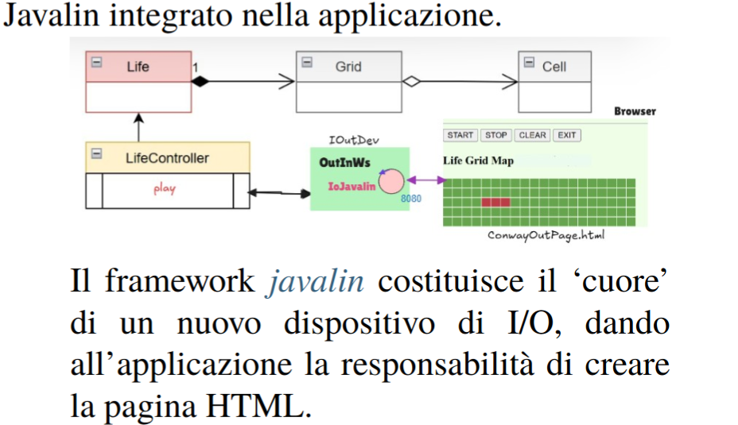

Introduction
Realizzazione in Java del GAME OF LIFE DI CONWAY
Requirements
- R1: Il sistema Life deve disporre di una pagina HTML utilizzata come interfaccia per input e output.
- R2: La pagina HTML deve essere realizzata come componente esterno rispetto all’applicazione principale.
- R3: L’architettura deve seguire il modello descritto nella documentazione IoJavalin disponibile a questo link.
- R4: Il sistema deve identificare il primo utente che accede alla pagina come owner del gioco.
- R5: Solo l’owner deve avere accesso ai comandi di controllo del gioco.
- R6: I comandi abilitati per l’owner sono START, STOP, CLEAN ed EXIT.
- R7: L’interfaccia deve aggiornarsi automaticamente durante l’esecuzione del gioco senza intervento manuale.
- R8: Gli utenti non owner che si collegano durante l’esecuzione devono vedere lo stato aggiornato della griglia.
- R9: La sincronizzazione della griglia deve garantire coerenza tra tutti i client connessi.
- R10: La pagina deve indicare chiaramente se il gioco continua anche in caso di griglia vuota.
- R11: La pagina deve segnalare anche la presenza di una configurazione stabile (assenza di evoluzione).
- R12: Il sistema deve essere distribuito ed eseguito tramite container Docker.
Problem analysis

L’introduzione di una pagina HTML modifica l’architettura del sistema, che diventa distribuito, poiché all’applicazione backend si affianca un client browser.
Per i requisiti R4-R5 è necessario distinguere tra un utente owner e utenti non owner. L’interfaccia grafica deve contenere i pulsanti START, STOP, CLEAN ed EXIT, che risultano utilizzabili esclusivamente dall’owner.
La gestione dei comandi si basa sull’interfaccia GameController definita nello Sprint1. I pulsanti
devono essere mappati sui seguenti dispatch verso la classe che implementa il controller:
- START → onStart()
- STOP → onStop()
- CLEAN → onClear()
Il comando EXIT ha invece la funzione di terminare la connessione tra l’utente owner e il server.
Per il requisito R4 viene implementata l’interfaccia IOutDev tramite la classe IOController,
responsabile della propagazione verso la pagina HTML dello stato aggiornato del gioco.
Problem analysis

La comunicazione tra browser e server avviene tramite WebSocket, in modo da supportare aggiornamenti in tempo reale come richiesto dal requisito R4. Alla connessione del client viene aperto un canale persistente tra pagina web e server.
I messaggi scambiati seguono il formato SENDER::COMMAND. Questa struttura è stata scelta per facilitare
l’elaborazione lato server e per separare chiaramente l’identità del mittente dal comando inviato.
Il campo SENDER permette di distinguere l’utente owner dagli altri client, mentre COMMAND
rappresenta l’azione richiesta dal browser.
L’identificativo del mittente è rappresentato da un pageId generato direttamente lato client al momento
dell’apertura della pagina.